Captured in the editor. The HUD shots are the Game view at 1080x2340; the close-ups come from a temporary camera
in front of each fighter while all 16 stand in the tale of the tape, with the head turn switched off and every face
held at one expression (LifeSigns.FaceOverride) so the three bodies can be compared. Measurements and
what was not checked: DOCS/20261114/lifelike-features.md.
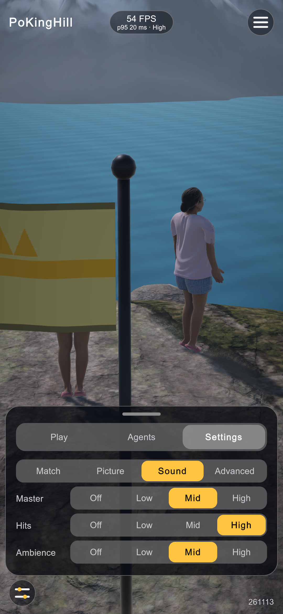
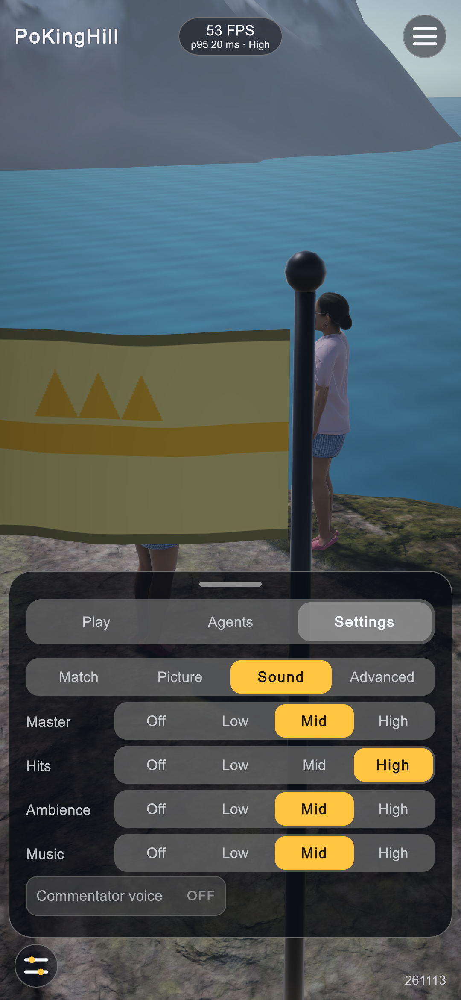
GameSettings.MusicVolume,
Mid by default) and a Commentator voice chip (GameSettings.Voice, off by default). The chip is
locked here because the editor and Windows have no voice (VoiceCaster.Available); it unlocks in the web
and Android builds. The page fits all five test phones (HudLayoutTests, settings section 2).None of the meshes has a jaw, brows or blendshapes: the jaw drop and brow are vertex offsets and the open mouth is
shaded in FX/Fighter.shader. Fear = jaw 1, brow raised. Strain = jaw 0.35, brow furrowed, full flush.
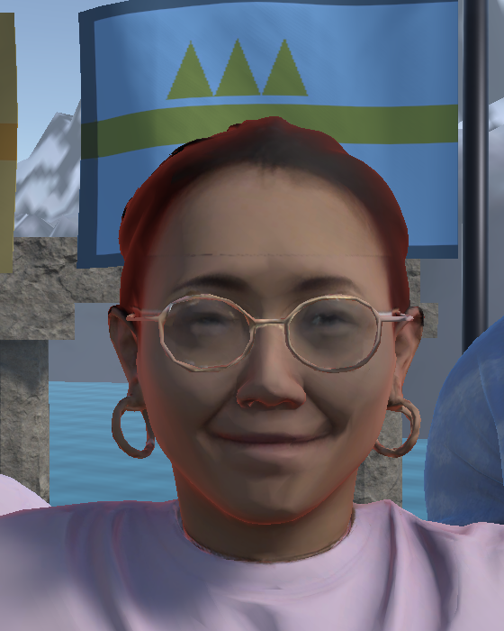
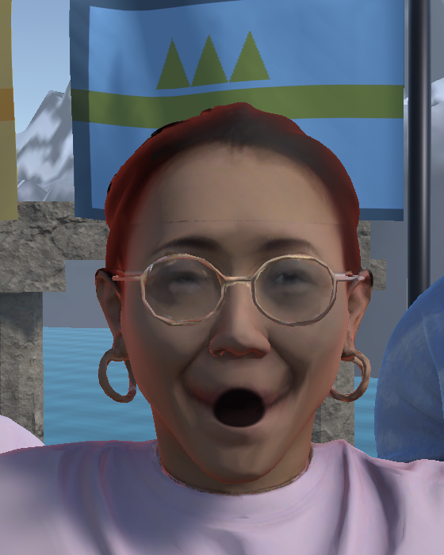
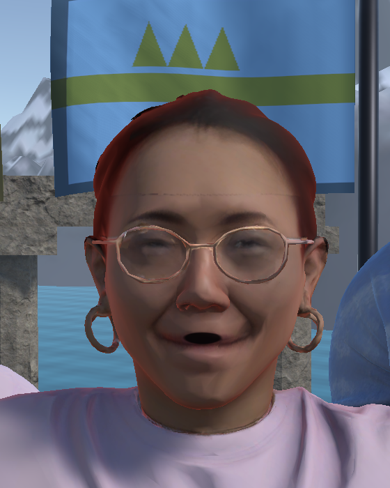
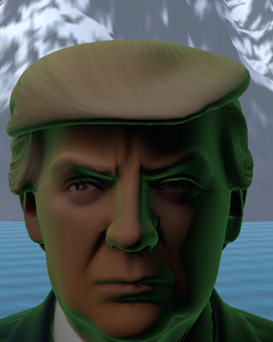
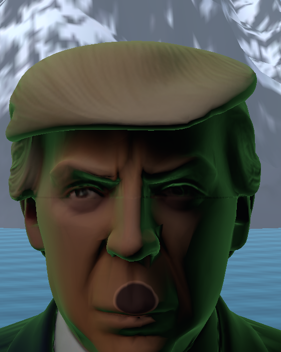
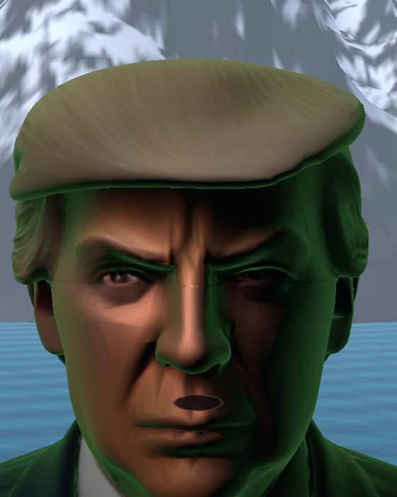
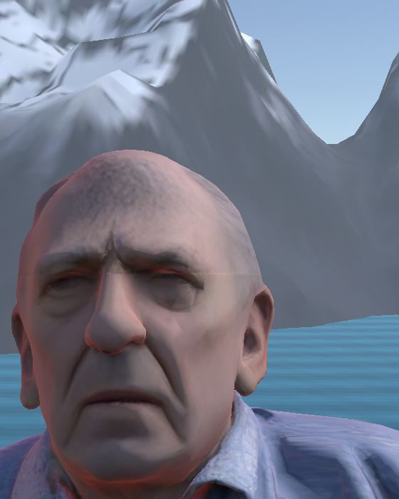
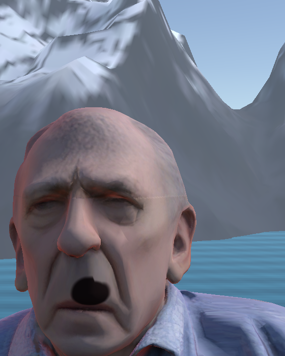
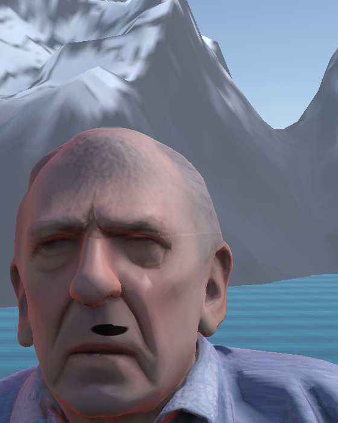
The colour casts on some faces (red, green, purple) are the seat-colour rim that was already there, not the flush. No eyes move and nothing blinks: the meshes have no eyelids.
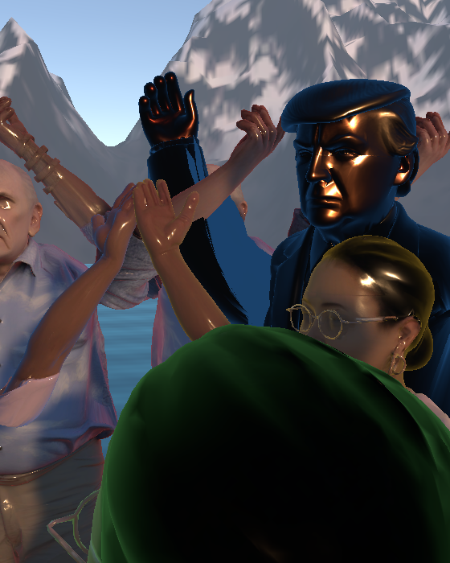
SkinFollower.ArmsUp forced to 1 on every fighter in the tale of the
tape, to show the pose on all three bodies at once (in a match only the winner raises its arms, once it stands at
the centre). The physics arms stay down: with them really raised the winner fell in 8 trials out of 8.| Design | Trials | Winner still upright |
|---|---|---|
| Fight brain balances with its arms' rest pose raised | 2 real rounds | 0 of 2 |
| Brain walks to the centre and stops, then a joint hold raises the arms | 6 controlled | 0 of 6 |
| Brain walks to the centre and stands; arms raised on the skin (shipped) | 6 controlled | 6 of 6 |